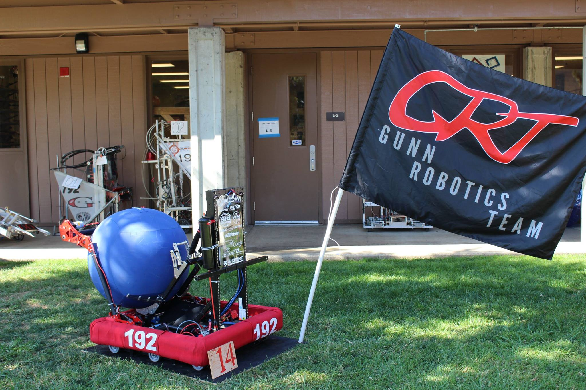
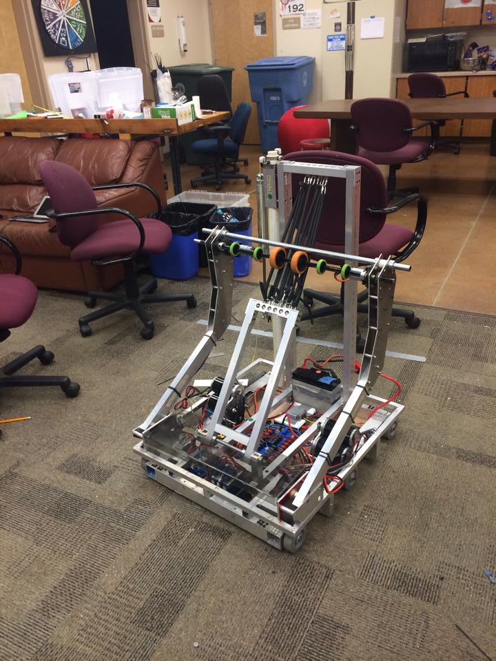
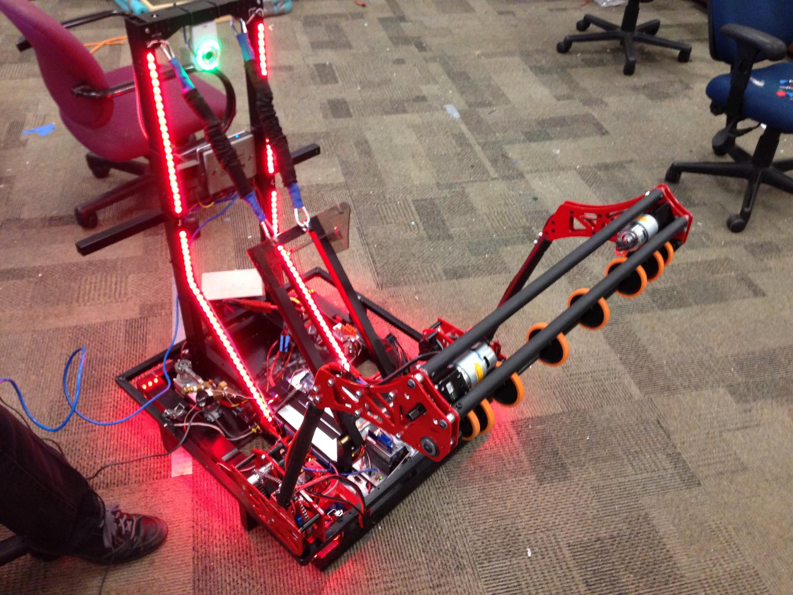
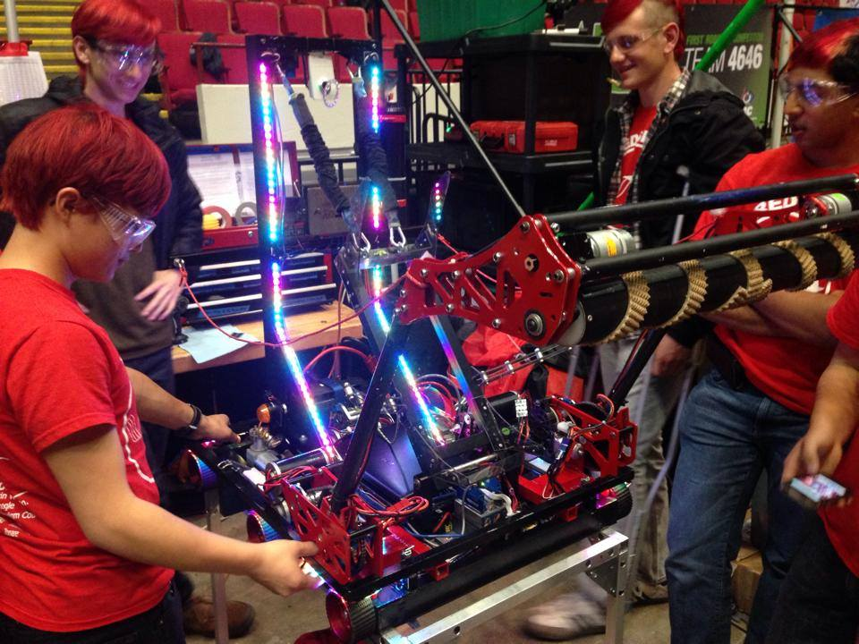
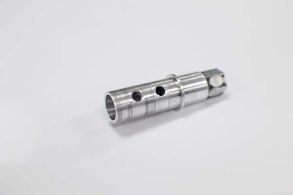
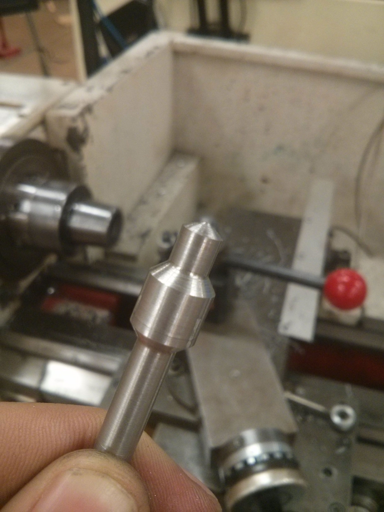
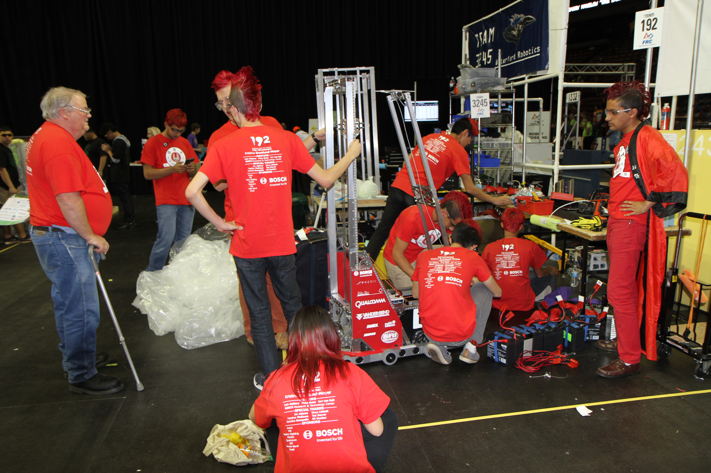
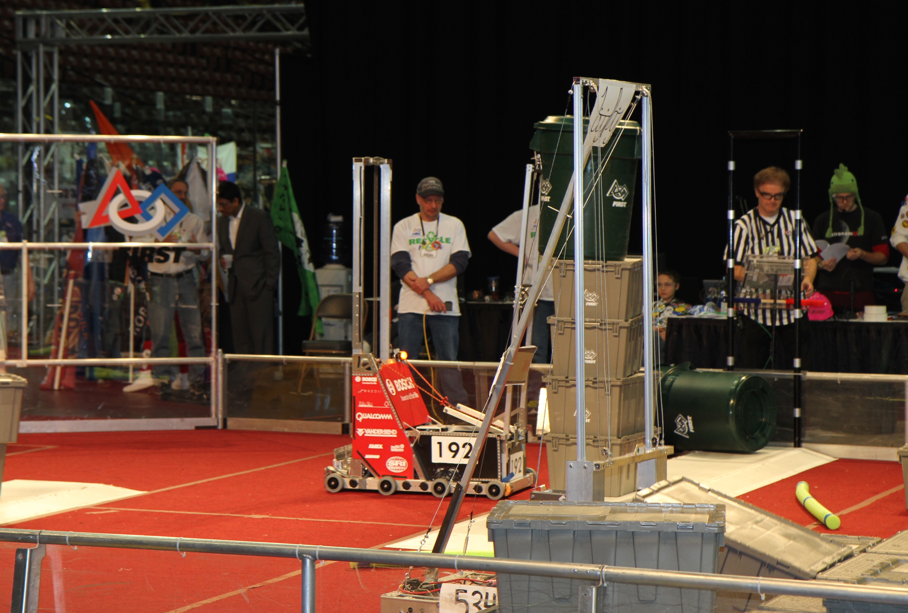
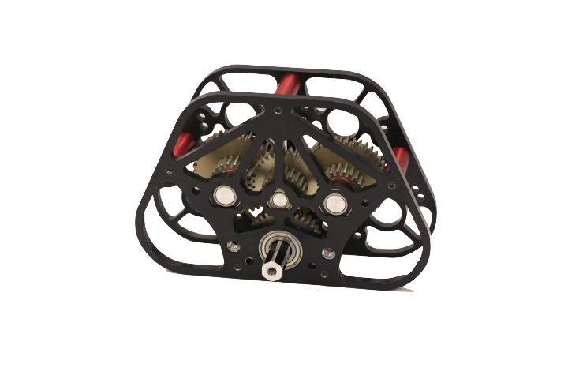
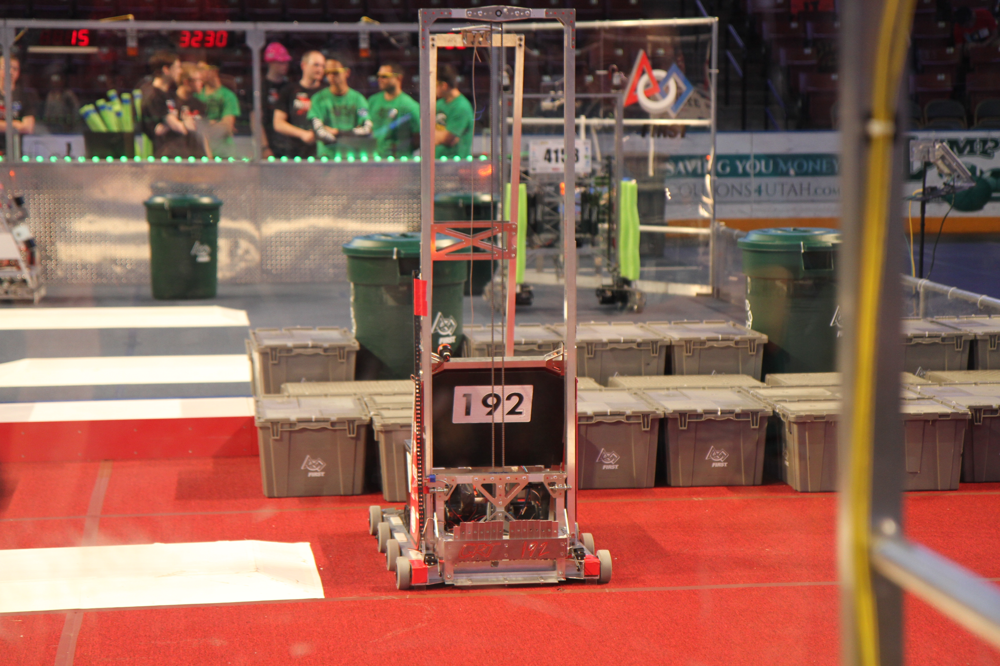

Gunn Robotics Team FRC 192
2014: Aerial Assist

In my third year of high school, I joined our FRC robotics team to gain more hands on design and manufacturing experience. Our team's robots were entirely student designd and built, from the shooting mechanisms down to the gearboxes and drivetrain. I was on the team for two years and competed in two competition seasons.
The 2014 Competition format consisted of two teams of 3 robots whose goal was to pick up large balls from the field and shoot them into the overhead goals on the opposite side. For the first 15 seconds of the game, each robot is controlled autonomously with pre-programmed code. The robot is then remotely controlled by a human driver for the next 2 minutes and 15 seconds. The official game animation can be seen here: Youtube.
We had only 6 weeks from the game reveal to design, build, test our robot and mechanisms before shipping it off to competition. The design process started with the prototyping of individual mechanisms out of wood and plastic and a basic systems analysis. After verifying the functionality of the mechanisms, we built and assembled the first metal version of our robot. We used Autodesk Inventor to model our robot and to create drawing sheets for machining.

Our ball pickup mechanism consisted of two arms and an intake roller. The arms were deployed using two geared window motors to extend the roller over the ball. The rubber roller would then suck the ball onto our robot's shooter mechanism. It could also be reversed to pass the ball to another teammate. Our shooter mechanism was a small bungee powered catapult, primed using a custom winch gearbox. For our final bot, we used our CNC mill to machine cutouts for the gearbox and base plates to save weight. We switched the roller design from a tread based roller to a solid rubber one half way through the competition as we found it impoved reliability. Polycarbonate plates and wings were added to better contain the ball inside our robot.



Our team was comprised of multiple specialized subgroups as well specific mechanism groups which change based on the needs of the game and robot. I joined the drivetrain subteam which was in charge of designing the drive system as well as the gearboxes required to drive certain mechanisms. On the drivetrain subteam, I learned how to design gearing based off of speed, torque and power requirements from motor specifications and how to machine parts on the lathe and mill.


A two speed gearbox was designed such that our robot could travel across the field quickly for offense, but also have enough torque to push other robots in defense. The 2-speed drive gearbox utilized a pneumatic actuated shifting rod, pushing steel balls to engage the desired gear with the output shaft. Belts and pulleys transfered power between the 3 brushed DC motors. Two gearboxes were used to drive the 6 total wheels of out. An internal belt and pulley system connected the wheels on each side to the gearbox. We competed at 3 regional competitions, winning the Excellence in Engineering design award at all three regionals independently. We also reached semi-finals at our local regional, one of the most costested in the nation, but were not able to advance further.

2015: Recycle Rush

The 2015 competition was different from previous years because the field was split in half such that each team did not directly interact with each other. The game involved picking up and stacking toteboxes on designated bumps in the field, comprised again of an autonomous component and a human operated compoment. Green trash bins were placed in the center of the field and could be picked up by either team. The official game animation can be seen here: Youtube.

At the end of the previous competition season, I had become the drivetrain subteam lead. Over the summer I worked on designing a new 2-speed gearbox that was even more compact than the previous year's. After the game was revealed, however, we decided to design a completely new single speed gearbox to better suit the needs of the game. This new gearbox used 4 motors and a lower gear ratio to support carrying and transporting heavier loads.


Our robot had two main mechanisms: a bin grabber and tote stacker. The controls subteam programmed the robot to autonomously move forward and steal a green bin from the center of the field and hold it using the long arm on the back of the robot. The tote stacker consisted of a chain driven lifting mechanism which hooked underneath the lip of the totes to transport it for stacking. It could lift, stack and transport up to three totes at a time. Although our robot was robust and reliable, it could not match the speed of other robots which could create and move stacks of up to 6 totes at a time. Although we did not rank as highly in the brackets, the process of designing, prototyping and evolving our robot was just as rewarding as winning the competitions would have been.
